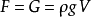
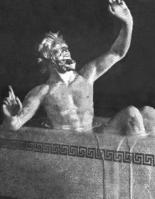
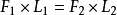

阿基米德


浮力原理简述：物体在液体中所获得的浮力，等于它所排出液体的重量，即：F=G（式中F为物体所受浮力，G为物体排开液体所受重力）。该式变形可得
（式中ρ为被排开液体密度，g为当地重力加速度，V为排开液体体积）
相传叙拉古赫农王让工匠替他做了一顶纯金的王冠。但是在做好后，国王疑心工匠做的金冠并非纯金，工匠私吞了黄金，但又不能破坏王冠，而这顶金冠确又与当初交给金匠的纯金一样重。这个问题难倒了国王和诸位大臣。经一大臣建议，国王请来阿基米德来检验皇冠。
最初阿基米德对这个问题无计可施。有一天，他在家洗澡，当他坐进澡盆里时，看到水往外溢，突然想到可以用测定固体在水中排水量的办法，来确定金冠的体积。他兴奋地跳出澡盆，连衣服都顾不得穿上就跑了出去，大声喊着“尤里卡！尤里卡！”（ερηκα，意思是“找到了”。）
他经过了进一步的实验以后，便来到了王宫，他把王冠和同等重量的纯金放在盛满水的两个盆里，比较两盆溢出来的水，发现放王冠的盆里溢出来的水比另一盆多。这就说明王冠的体积比相同重量的纯金的体积大，密度不相同，所以证明了王冠里掺进了其他金属。
这次试验的意义远远大过查出金匠欺骗国王，阿基米德从中发现了浮力定律（阿基米德原理）：物体在液体中所获得的浮力，等于它所排出液体的重量。（即广为人知的排水法）
返回顶部杠杆原理：满足下列三个点的系统，基本上就是杠杆：支点、施力点、受力点。杠杆原理亦称“杠杆平衡条件”：要使杠杆平衡，作用在杠杆上的两个力矩（力与力臂的乘积）大小必须相等。即：动力×动力臂=阻力×阻力臂,用公式可表达为：
(F1表示动力，l1表示动力臂，F2表示阻力，l2表示阻力臂)
海维隆王又遇到了一个棘手的问题：国王替埃及托勒密王造了一艘船，因为太大太重，船无法放进海里，国王就对阿基米德说：“你连地球都举得起来，把一艘船放进海里应该没问题吧？阿基米德叫工匠在船的前后左右安装了一套设计精巧的滑车和杠杆。阿基米德叫100多人在大船前面，抓住一根绳子，他让国王牵动一根绳，大船居然慢慢地滑到海中。国王异常高兴，当众宣布：“从现在起，我要求大家，无论阿基米德说什么，都要相信他！”
返回顶部阿基米德对于机械的研究源自于他在亚历山大城求学时期，有一天阿基米德在久旱的尼罗河边散步，看到农民提水浇地相当费力，经过思考之后他发明了一种利用螺旋作用在水管里旋转而把水吸上来的工具，后世的人叫它做“阿基米德螺旋提水器”。埃及一直到二千年后的现代，还有人使用这种器械。这个工具成了后来螺旋推进器的先祖。
阿基米德非常重视试验，一生设计、制造了许多仪器和机械，值得一提的有举重滑轮、灌地机、扬水机以及军事上用的抛石机等。
当时的欧洲，在工程和日常生活中，经常使用一些简单机械，譬如：螺丝、滑车、杠杆、齿轮等，阿基米德花了许多时间去研究，发现了“杠杆原理”和“力矩”的观念，对于经常使用工具制作机械的阿基米德而言，将理论运用到实际的生活上是轻而易举的。阿基米德极可能是当时全世界对于机械的原理与运用了解最透彻的人。
阿基米德和雅典时期的科学家有着明显的不同，就是他既重视科学的严密性、准确性，要求对每一个问题都进行精确的、合乎逻辑的证明；又非常重视科学知识的实际应用。
返回顶部阿基米德在数学上也有着极为光辉灿烂的成就，特别是在几何学方面。
阿基米德的数学思想中蕴涵微积分，阿基米德的《方法论》中已经“十分接近现代微积分”，这里有对数学上“无穷”的超前研究，贯穿全篇的则是如何将数学模型进行物理上的应用。
他所缺的是没有极限概念，但其思想实质却伸展到17世纪趋于成熟的无穷小分析领域里去，预告了微积分的诞生。
阿基米德将欧几里德提出的趋近观念作了有效的运用。他利用“逼近法”算出球面积、球体积、抛物线、椭圆面积，后世的数学家依据这样的“逼近法”加以发展成近代的“微积分”。阿基米德还利用割圆法求得π的值介于3.14163和3.14286之间。
另外他算出球的表面积是其内接最大圆面积的四倍，又导出圆柱内切球体的体积是圆柱体积的三分之二，这个定理就刻在他的墓碑上。
阿基米德研究出螺旋形曲线的性质，现今的“阿基米德螺线”曲线，就是因为纪念他而命名。另外他在《数沙者》一书中，他创造了一套记大数的方法，简化了记数的方式。
阿基米德的几何著作是希腊数学的顶峰。他把欧几里得严格的推理方法与柏拉图鲜艳的丰富想象和谐地结合在一起，达到了至善至美的境界，从而“使得往后由开普勒、卡瓦列利、费马、牛顿、莱布尼茨等人继续培育起来的微积分日趋完美”。
返回顶部阿基米德发展了天文学测量用的十字测角器，并制成了一架测算太阳对向地球角度的仪器。
阿基米德还曾经运用水力制作一座天象仪，球面上有日、月、星辰、五大行星。根据记载，这个天象仪不但运行精确，连何时会发生月蚀、日蚀都能加以预测。
阿基米德还认为地球可能是圆的。晚年阿基米德开始怀疑地球中心学说，并猜想地球有可能绕太阳转动，这个猜想一直到哥白尼时代才被人们提出来讨论。
返回顶部